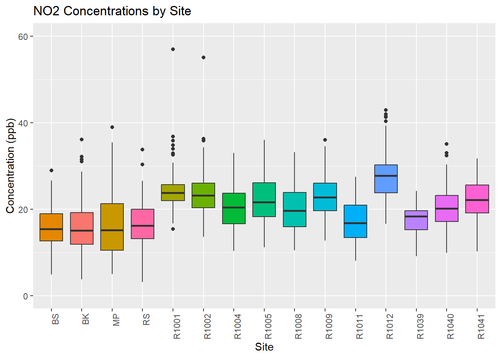
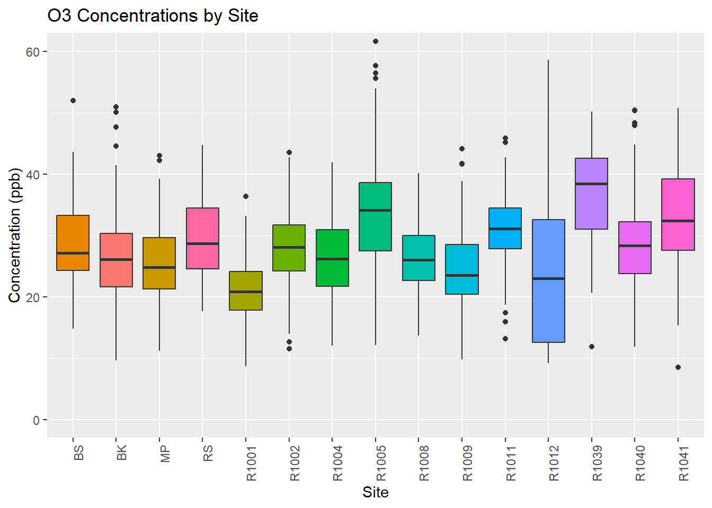
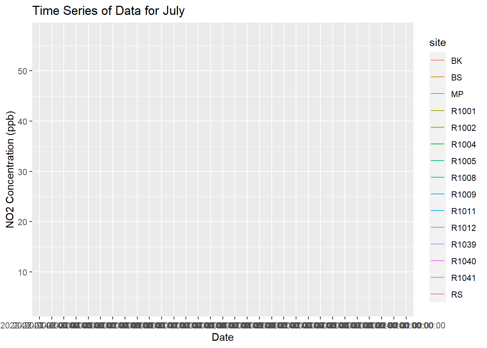

AAAR 2023 Data Wrangling Tutorial
Dr. Naomi Zimmerman
2023-10-02
Introduction
Managing your experimental data is increasingly difficult because of the sheer volume of data that is being collected, the high time resolution of the data, the number of data users, and publishing requirements on making data and codes open and accessible. Taking some time to learn from core data management and data wrangling skills is important!
In this tutorial, we’ll look at the data management and analysis pipeline from data import / upload through to data visualization. We’ll compare a couple of different approaches considering the needs I just outlined. The first data set I am providing is a pre-cleaned data set for simplicity and to show the pipeline from start to finish. If we have time, we’ll look at a more complicated set of data that requires more pre-processing before we can look at it.
There are many coding languages you can use to work with your data. In this tutorial, I am going to use Structured Query Language (SQL) and R. To manage SQL data, I will show an example with MySQL. This is just one database management system, and many of the same principles will apply if you’re using other popular SQL database management systems like SQLite or PostgreSQL. You just need to change the R package you are using to interface with the SQL database management system you are using.
I’ll also briefly demonstrate importing your data directly into R and some common pitfalls / why the SQL approach can be preferable.
Once our data is in R using RStudio, a popular integrated development environment (IDE) for R, we’ll do some quick visualizations, introducing you to a popular collection of R coding packages called the ‘tidyverse’. This shares many principles with the ‘pandas’ software library in Python. So while we will work in R/RStudio today, again, many of the ideas or processes can be replicated in Python (for example using the PyCharm IDE). It’s just a matter of personal preference :)
To manage our R codes and take notes / share interim plots, we’ll be using a markdown file. I’m typing this tutorial right now in an R Markdown file. Very meta. Another popular piece of software for markdown files with embedded R or Python coding is Jupyter Notebooks. We won’t run any Jupyter notebooks, but I will show you briefly what they’re all about.
As we work through our data, we all know that analysis can take time. Or perhaps we want to run a code that might break everything (happens to the best of us!) and we want to make sure we can restore our previous code. Version control is your friend here and it’s so easy to do with Git, which is a distributed version control system that tracks changes in any set of computer files. We’ll use the Github platform as our convenient cloud-based system to execute our Git version control. A nice feature of Github is that we can also easily convert our Markdown files into webpages (which is what you’re reading right now!). So cool, right?
Lastly, if you have a lot of data being collected routinely, it can be cool to show your data. We’ll do a simple example in Grafana, which is an open source analytics and interactive visualization web application.
What we’ll cover today is a lot for a 1 hour 45 minute session - and that’s okay! The goal is that you come out of this tutorial with some ideas, new terminology and an interest in learning more. If you take the time to learn these principles and approaches early on in your program, you’ll have an easier time down the road when you’re trying to address Reviewer 2 comments almost a year after a paper was originally developed, because you left yourself an awesome paper trail. Future you is already thanking you! Now without further ado, let’s get started.
Getting yourself set-up
If you want to follow along in real-time, you’ll need the following tools installed on your machine. Note that I tested this tutorial in the Windows operating system. I can’t make any guarantees it will work 100% smoothly in a macOS or Linux operating system, but there shouldn’t be too many pitfalls with this.
Tools needed:
- MySQL (Click here for YouTube tutorial for installing MySQL on Windows 11)
- R and RStudio (Click here for YouTube tutorial for installing R and RStudio)
- Git and a Github account (Click here for a Github Guide on Installing Git)
- Connect Git to RStudio (Click here for a YouTube tutorial on connecting Git and Github to an RStudio Project)
Other notes:
- This tutorial will require a bunch of R packages to be installed - but don’t worry, I have parts of the code blocks below that will install any R packages you might need that you don’t already have :)
- All the data, codes and markdown files are available in the Github repository (Click here to access)
- If you just want the R Markdown file, you can download it from the upper right corner of the page.
Part 0: Version Control
In developing this tutorial, I used version control using Git and Github. If you’re in academia, Github is great because you can get access to many paid features for free (making pages from private repositories, creating organizations, etc.). You can interact with Git in RStudio very easily after it’s installed (see links from the Introduction). Once you’ve successfully installed Git and made it accessible in RStudio, you’ll see a little “Git” tab in the top right panel. We can use this panel to quickly Commit changes to our repository, view file additions or deletions, etc.
Those who are familiar with Git may prefer to use the command line - that’s outside of the scope of our tutorial today, but you can access the terminal from RStudio in the “Terminal” tab of the bottom left panel.
I will now quickly demonstrate making a change, committing that change, and pushing my change to Github.
Forking the directory
If you want to follow along in real-time with this tutorial, navigate to this tutorial’s repository (Click here to access) and create a fork (which will create a local copy in your own repository).
Part 1: SQL Set-up and Logistics
So first things first, we’re going to make sure we have set up and configured MySQL on our machine. We’ll do this part live, so follow along. We can interact with MySQL in a few ways:
- MySQL Workbench: A Graphical User Interface for your SQL data
- The command line
The nice thing about the workbench is that it can help you learn how to write and parse SQL queries, since it will translate your request into the query. So we’ll mostly be using the Workbench to check that our work is being stored correctly, but I will show some quick examples in the command line too later on in the tutorial.
Once we have set up MySQL on our machine, we need to make sure The first thing we need to do, is add our experiment data to MySQL so we can query the data in R. While these steps occur outside of RStudio, I have included some screenshots here so you can follow along. There are a few options to add data to MySQL. Here I will describe two of them:
Housekeeping
We are going to do a few things to get started!
- Install the necessary packages
- Load the necessary packages
knitr::opts_chunk$set(echo = TRUE)
# Load packages - I like to use the pacman package to do this more elegantly.
if (!require("pacman")) install.packages("pacman"); library(pacman)## Loading required package: pacman# The pacman package has a nice function 'p_load()' that will load the listed packages and install them if they are not already installed.
p_load(DBI,RODBC,odbc,dbplyr,RMySQL,tidyverse,keyring,con2aqi,lubridate, stringr)
# Check that MySQL is listed, if it isn't need to provide steps.
sort(unique(odbcListDrivers()[[1]]))## [1] "Microsoft Access Driver (*.mdb, *.accdb)"
## [2] "Microsoft Access Text Driver (*.txt, *.csv)"
## [3] "Microsoft Excel Driver (*.xls, *.xlsx, *.xlsm, *.xlsb)"
## [4] "MySQL ODBC 8.1 ANSI Driver"
## [5] "MySQL ODBC 8.1 Unicode Driver"
## [6] "SQL Server"sql_conn <- dbConnect(RMySQL::MySQL(),
dbname = "aaar2023tutorial",
Server = "localhost",
port = 3306,
user = "root",
password = key_get("MYSQL_PASSWORD")
)
initial_run=0
if(initial_run==1){
## FIRST TIME ONLY!
# load some data
metadata <- read_csv("data/example 1/metadata.csv")
NO2_daily <- read_csv("data/example 1/NO2_daily.csv", col_types = cols(date = col_character())) %>% mutate(date=mdy(date), date=format(date,"%Y-%m-%d"))
O3_daily <- read_csv("data/example 1/O3_daily.csv", col_types = cols(date = col_date(format = "%m/%d/%Y")))
PM_daily <- read_csv("data/example 1/PM_daily.csv", col_types = cols(date = col_date(format = "%m/%d/%Y")))
# So that we can permit writing to SQL from R!
dbSendQuery(sql_conn, "SET GLOBAL local_infile = true;")
# create a table in your SQL database
dbCreateTable(sql_conn,name="no2_daily", fields=NO2_daily)
dbCreateTable(sql_conn,name="o3_daily", fields=O3_daily)
dbCreateTable(sql_conn,name="pm_daily", fields=PM_daily)
# write our data to the SQL database
dbWriteTable(sql_conn,"no2_daily",NO2_daily,append=TRUE, row.names=FALSE)
dbWriteTable(sql_conn,"o3_daily",O3_daily,append=TRUE, row.names=FALSE)
dbWriteTable(sql_conn,"pm_daily",PM_daily,append=TRUE, row.names=FALSE)
dbSendQuery(sql_conn,"ALTER TABLE no2_daily MODIFY date datetime;")
dbSendQuery(sql_conn,"ALTER TABLE o3_daily MODIFY date datetime;")
dbSendQuery(sql_conn,"ALTER TABLE pm_daily MODIFY date datetime;")
}
# let's query our SQL in R! Let's say we are interested in calculating the AQI for the week of May 15 - 21, 2022 at the Mahon Park site (MP)
no2_db = tbl(sql_conn,"no2_daily") %>% select(date,MP) %>% filter(between(date, as.Date('2022-05-15'), as.Date('2022-05-21'))) %>% show_query() %>% collect() %>% rename(NO2_MP = MP)## <SQL>
## SELECT `date`, `MP`
## FROM `no2_daily`
## WHERE (`date` BETWEEN CAST('2022-05-15' AS DATE) AND CAST('2022-05-21' AS DATE))o3_db = tbl(sql_conn,"o3_daily") %>% select(date,MP) %>% filter(between(date, as.Date('2022-05-15'), as.Date('2022-05-21'))) %>% show_query() %>% collect() %>% rename(O3_MP = MP)## <SQL>
## SELECT `date`, `MP`
## FROM `o3_daily`
## WHERE (`date` BETWEEN CAST('2022-05-15' AS DATE) AND CAST('2022-05-21' AS DATE))pm_db = tbl(sql_conn,"pm_daily") %>% select(date,MP) %>% filter(between(date, as.Date('2022-05-15'), as.Date('2022-05-21'))) %>% show_query() %>% collect() %>% rename(PM_MP = MP)## <SQL>
## SELECT `date`, `MP`
## FROM `pm_daily`
## WHERE (`date` BETWEEN CAST('2022-05-15' AS DATE) AND CAST('2022-05-21' AS DATE))#let's put it together into one dataframe for our local analysis
aqi <- left_join(no2_db, o3_db, by='date') %>% left_join(., pm_db, by='date') %>% rowwise() %>%
mutate(aqi = max(con2aqi("pm25",PM_MP),con2aqi("o3",O3_MP/1000,"8h"),con2aqi("no2",NO2_MP)))
# maybe now we want to make a box plot of the no2 concentrations across sites!
no2_tidy = tbl(sql_conn,"no2_daily") %>% select(-date) %>% show_query() %>% collect() %>% pivot_longer(everything(),names_to = "site", values_to = "concentration")## <SQL>
## SELECT
## `R1001`,
## `R1002`,
## `R1004`,
## `R1005`,
## `R1008`,
## `R1009`,
## `R1011`,
## `R1012`,
## `R1039`,
## `R1040`,
## `R1041`,
## `BS`,
## `BK`,
## `RS`,
## `MP`
## FROM `no2_daily`# Create a custom order for the 'site' variable
site_order <- c("BS", "BK", "MP","RS","R1001","R1002","R1004","R1005","R1008","R1009","R1011","R1012","R1039","R1040","R1041")
# Make box plots for everything
no2_plot <- ggplot(no2_tidy, aes(x = factor(site, levels = site_order), y = concentration, fill=site)) +
geom_boxplot() +
labs(title = "NO2 Concentrations by Site",
x = "Site",
y = "Concentration (ppb)") +
theme(axis.text.x = element_text(angle = 90, hjust = 1), legend.position="none") +
scale_fill_discrete() +
coord_cartesian(ylim = c(0,60))
no2_plot## Warning: Removed 162 rows containing non-finite values (`stat_boxplot()`).
o3_tidy = tbl(sql_conn,"o3_daily") %>% select(-date) %>% show_query() %>% collect() %>% pivot_longer(everything(),names_to = "site", values_to = "concentration")## <SQL>
## SELECT
## `R1001`,
## `R1002`,
## `R1004`,
## `R1005`,
## `R1008`,
## `R1009`,
## `R1011`,
## `R1012`,
## `R1039`,
## `R1040`,
## `R1041`,
## `BS`,
## `BK`,
## `RS`,
## `MP`
## FROM `o3_daily`o3_plot <- ggplot(o3_tidy, aes(x = factor(site, levels = site_order), y = concentration, fill=site)) +
geom_boxplot() +
labs(title = "O3 Concentrations by Site",
x = "Site",
y = "Concentration (ppb)") +
theme(axis.text.x = element_text(angle = 90, hjust = 1), legend.position="none") +
scale_fill_discrete() +
coord_cartesian(ylim = c(0,60))
o3_plot## Warning: Removed 162 rows containing non-finite values (`stat_boxplot()`).
pm_tidy = tbl(sql_conn,"pm_daily") %>% select(-date) %>% show_query() %>% collect() %>% pivot_longer(everything(),names_to = "site", values_to = "concentration")## <SQL>
## SELECT
## `R1001`,
## `R1002`,
## `R1004`,
## `R1005`,
## `R1008`,
## `R1009`,
## `R1011`,
## `R1012`,
## `R1039`,
## `R1040`,
## `R1041`,
## `BS`,
## `BK`,
## `RS`,
## `MP`
## FROM `pm_daily`pm_plot <- ggplot(pm_tidy, aes(x = factor(site, levels = site_order), y = concentration, fill=site)) +
geom_boxplot() +
labs(title = "PM2.5 Concentrations by Site",
x = "Site",
y = "Concentration (ug/m3)") +
theme(axis.text.x = element_text(angle = 90, hjust = 1), legend.position="none") +
scale_fill_discrete() +
coord_cartesian(ylim = c(0,20))
pm_plot## Warning: Removed 268 rows containing non-finite values (`stat_boxplot()`).
# Now let's make a time series for the month of July 2022 for all pollutants
no2_july = tbl(sql_conn,"no2_daily") %>% filter(month(date)==7) %>%show_query() %>% collect() %>% pivot_longer(cols=c(2:16),names_to = "site", values_to = "concentration")## <SQL>
## SELECT *
## FROM `no2_daily`
## WHERE (EXTRACT(month FROM `date`) = 7.0)ggplot(no2_july, aes(x = date, y = concentration, color = site)) +
geom_line(na.rm=TRUE) +
labs(title = "Time Series of Data for July",
x = "Date",
y = "NO2 Concentration (ppb)")## `geom_line()`: Each group consists of only one observation.
## ℹ Do you need to adjust the group aesthetic?
# Read data into Grafana
# Make a user that can only read our SQL database called "grafana-demo"
# CREATE USER 'grafana-demo'@'localhost' IDENTIFIED BY 'aaartutorial'
# SELECT User from mysql.user to view our users
# GRANT SELECT ON database_name.table_name TO 'username'@'localhost';
# FLUSH PRIVILEGES;